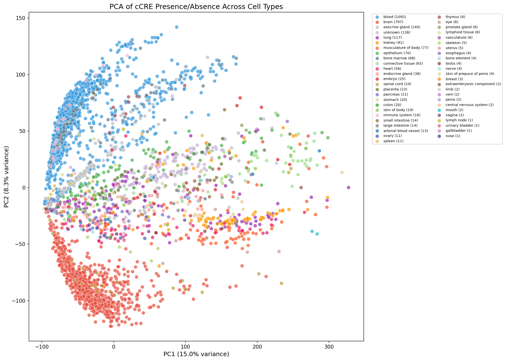
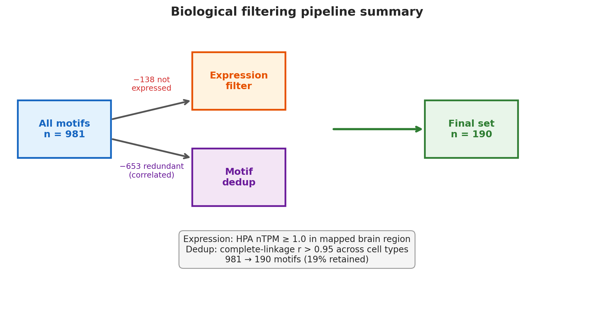
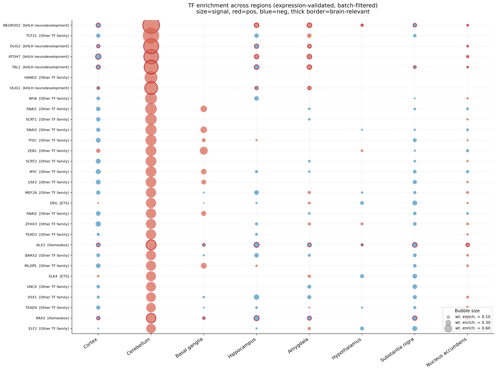
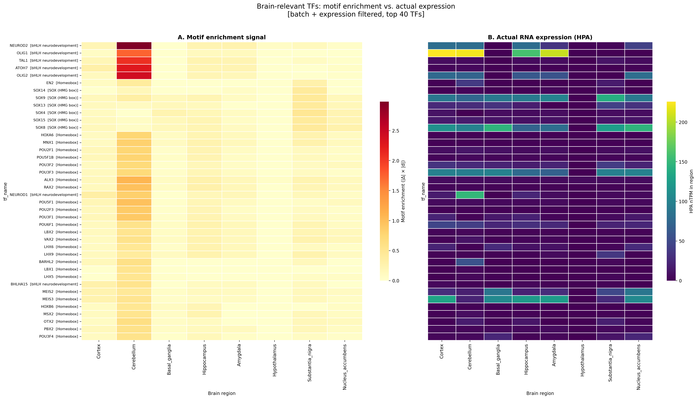

.png)
What's Actually in Your Training Data?
March 2, 2026 · Aditya Sivakumar
Highlights
- 28 clean axes of regulatory variation survive permutation testing across 2.3M cCREs and 3,071 bulk samples.
- TF motif specificity spans from highly cell-type-restricted (NEUROD2, Gini = 0.40) to ubiquitous housekeeping factors (SP4, Gini = 0.05)—the library encodes cell identity, not noise.
- Block-diagonal lineage structure recapitulates developmental biology from chromatin alone: within-lineage JSD of 0.003–0.019 vs cross-lineage 0.20–0.30+.
- 14 of 87 specific TFs reproduced across independent bulk and single-cell pipelines, confirming the signal is real.
When you train a generative model on regulatory genomics data, you’re always gambling a little: is the model learning biology, or learning your pipeline?
We’re building models that design synthetic regulatory DNA—short sequences that control which genes turn on in which cell types. Get this right, and you have the key ingredient for cell-type-specific gene therapy: a way to ensure a therapeutic transgene expresses only in the cells that need it. The raw ingredient is a library of cis-regulatory elements (cCREs)—enhancers, promoters, silencers—the non-coding grammar that determines cell identity.1What is a cCRE? Candidate cis-Regulatory Elements are non-coding genomic regions identified by the ENCODE project’s SCREEN pipeline from DNase hypersensitivity signal. They are classified as dELS (distal enhancer-like), pELS (proximal enhancer-like), CTCF-only, or PLS (promoter-like) based on their chromatin signatures. Every cell in your body has the same ~3 billion base-pair genome, but a cortical neuron and a liver hepatocyte express completely different genes. The difference is which cCREs are open. If we can learn the rules governing that switch, we can write new ones.
But that only works if the training data actually encodes those rules. Batch artifacts, technical noise, poor cell-type resolution—any of these can mean your model is learning nothing useful. So before anything touches a generative model, we put the library through a series of checks. Here’s what we ran, what surprised us, and what held up.
The Data Landscape
We started with two datasets that capture the same phenomenon—chromatin accessibility—at very different scales.
The first is ENCODE’s bulk DNase-seq catalog: 2.3 million cCREs across 3,071 human samples from every major organ system. DNase-seq finds regions where the chromatin is open—unwound from its histone packaging, accessible to the transcription factors that control gene expression.2How DNase-seq works. DNase I preferentially cleaves nucleosome-free DNA; sequencing the cut sites reveals regions of open chromatin. This is a tissue-level assay: the signal averages across all cell types in the sample. It’s a satellite view of gene regulation—enormous breadth, thousands of samples—but each sample is a blend of cell types ground together. You can see what regulatory elements exist across the human body. You can’t say which belong to which cell.

The second dataset fills that gap. The Allen Brain Institute’s snATAC-seq atlas profiles ~9.4 million individual nuclei from 130 samples spanning 42+ brain regions and 106 cell types. This is the street-level view: for each individual cell, we know which cCREs are open.3How snATAC-seq differs from bulk. Each nucleus is individually barcoded via combinatorial indexing or droplet-based capture, so chromatin accessibility is measured per-cell rather than averaged across tissue. The cost is extreme sparsity: most regions read as “0” in any single cell because only ~10,000 of ~2 million possible regions are captured per nucleus. The tradeoff is scope—this atlas covers the brain in extraordinary depth, but only the brain.
Together, bulk gives us breadth and statistical power; single-cell gives us cell-type resolution. The question is whether they agree—and whether either one contains real regulatory signal at all.
Separating Signal from Noise
The first question is the most basic: is the variation in this dataset biological, or is it just technical noise?
We ran PCA on the full bulk accessibility matrix—2.3 million cCREs across 3,071 samples. Early PCs were interpretable in the way you’d hope. PC1 (15.0% of variance): chromatin compaction vs transcriptional activity, the most fundamental axis in chromatin biology. PC2 (8.3%): brain vs blood—immune signaling against lipid metabolism, η² = 0.77 for tissue type. PC14: cortex vs basal ganglia. These look biological.
But you can always find patterns in data. The key question wasn’t whether the top PCs looked interpretable—it was whether the later ones were above what you’d get from chance structure. We shuffled sample labels 100 times, re-ran PCA each time, and built a null distribution for the variance explained by each component. Thirty PCs exceed the null (all \(p = 0.010\)). Two of those turned out to be batch: PC3 correlates with file size (\(r = -0.52\), a proxy for sequencing depth4Why file size is a batch proxy. Larger files reflect deeper sequencing, which systematically inflates accessibility estimates in samples with more reads. When a PC correlates with file size, it is capturing technical variance in sequencing depth rather than biological variation.), PC6 with experimental batch (\(r = -0.38\)). We dropped both.
That leaves 28 clean axes of biological variation. Each one represents a real regulatory program encoded in the genome. By PC30—the last one above the null—the variance explained has dropped from 41% to 0.14%, but it still clears the permutation threshold with a z-score of 11.7. Past that, noise.
Does the Library Encode Cell Identity?
Knowing that the bulk data contains real biological variation is encouraging, but it doesn’t answer the question we actually care about: does the library encode cell-type-specific regulatory programs? For that, we need the single-cell data.
We scanned 981 deduplicated TF binding motifs across all 106 brain cell types and computed a Gini coefficient for each—how unevenly a motif is distributed. Gini of 0: equally enriched everywhere. Gini near 1: concentrated in one cell type. The range we see spans from “this motif defines a specific cell type” to “this motif is the regulatory equivalent of breathing.”
What’s striking is that the most specific TFs are exactly the ones a developmental neurobiologist would predict—the TFs you’d want to see if the library is actually working:5What TF families mean. bHLH (basic helix-loop-helix) factors are the master regulators of neural cell fate; they form homo- and heterodimers that bind E-box motifs (CANNTG) in enhancers. AP-1 factors (FOS, JUN, JUNB) form dimers that mediate activity-dependent gene expression. KLF/SP factors regulate broadly expressed metabolic and chromatin genes.
- NEUROD2 (Gini = 0.40) sits at the top—a bHLH factor that drives cortical neuron maturation in layers 4/5, activating genes for synaptic transmission and dendritic growth. In our data, it’s restricted almost entirely to excitatory neuron subtypes. Not a generic “brain” signal—a specific cell-fate program, the kind of regulatory logic a generative model needs to learn.
- OLIG1/2/3 (Gini = 0.34–0.40): oligodendrocyte lineage factors—the cells that wrap axons in myelin. OLIG2 is required for both oligodendrocyte precursors and motor neuron progenitors; OLIG1 drives terminal differentiation. High specificity here means the library resolves glial from neuronal programs.
- NEUROG1 (Gini = 0.33): proneural factor specifying glutamatergic fate from radial glia progenitors during cortical neurogenesis. This one is notable because it’s a developmental factor—means the library captures regulatory logic from differentiation, not just mature cell states.
At the other end, you find exactly the TFs you’d expect to be everywhere: SP4 (Gini = 0.18), a zinc-finger factor that broadly regulates neuronal transcription, and EGR1 (Gini = 0.18), an immediate-early gene that fires in any active neuron. Housekeeping, not identity. The fact that the Gini cleanly separates these from the fate determinants is itself a validation.
One detail on curation: these 981 motifs aren’t the raw JASPAR output. We removed 138 whose parent TF isn’t expressed in brain (HPA nTPM < 1.0) and deduplicated 653 with correlated binding profiles (complete-linkage \(r > 0.95\)). That leaves 190 non-redundant, brain-expressed motifs—19% of the original set. Every surviving motif corresponds to a protein actually present in brain tissue.

Gini coefficient formula
The Gini coefficient measures inequality of a motif’s hit rate across cell types. For a motif with hit rates \(x_1, x_2, \ldots, x_n\) across \(n\) cell types:
\[ G = \frac{\displaystyle\sum_{i=1}^{n}\sum_{j=1}^{n}|x_i - x_j|}{2n\displaystyle\sum_{i=1}^{n}x_i} \]\(G = 0\) means the motif is equally enriched in every cell type (completely ubiquitous); \(G \to 1\) means it is concentrated in a single cell type (perfectly specific).
The Lineage Test
Motif specificity is a good start, but the deeper question is whether the relationships between cell types make sense. If the library encodes real regulatory biology, then cell types from the same developmental lineage should look more similar to each other than to unrelated cell types.6Lineage in this context. Brain cells derive from neural stem cells that progressively restrict their fate. The major branch point separates neurons (excitatory + inhibitory) from glia (astrocytes, oligodendrocytes). Within neurons, excitatory cells (glutamatergic, born in the cortex) and inhibitory cells (GABAergic, born in the ganglionic eminences) have distinct developmental origins despite intermingling in the mature brain. Astrocytes should cluster with astrocytes. Oligos with oligos. And the boundaries should be sharp.
We tested this two ways. First, the Jaccard index—for any pair of cell types, what fraction of their cCREs overlap? Within the oligodendrocyte lineage (OGC_1 through OPC and COP), subtypes share 77–87% of their open chromatin regions. These cells all descend from a common precursor, and even as they mature into functionally distinct subtypes, they retain most of their ancestor’s regulatory landscape. Compare that to oligodendrocytes vs excitatory neurons: overlap drops to 0.15–0.25. Those lineages diverged early in development—ventral progenitors vs dorsal radial glia—and that separation is written into their chromatin.
Second, Jensen–Shannon divergence, which asks a subtler question: even if two cell types open similar regions, do they use the same transcription factor binding motifs? This gets at regulatory grammar, not just geography. Within-lineage JSD: 0.003–0.019—cells in the same lineage don’t just open the same regions, they use them with the same logic. Cross-lineage JSD reaches 0.20–0.30+. Different lineages employ fundamentally different TF programs.
Look at the heatmaps below. The block-diagonal structure is unmistakable: tight clusters within each lineage, sharp boundaries between them. Excitatory neurons. Inhibitory subtypes (PVALB, SST, VIP, LAMP5, SNCG). Astrocytes. Oligodendrocytes. Microglia. And this structure was not imposed by our analysis—no labels were used in the clustering. The developmental hierarchy falls out of the chromatin data on its own.
Mathematical definitions
Jaccard index. For two cell types \(A\) and \(B\) with sets of accessible cCREs:
\[ J(A,B) = \frac{|A \cap B|}{|A \cup B|} \]\(J = 1\) means identical regulatory landscapes; \(J = 0\) means completely disjoint.
Jensen–Shannon divergence. For TF motif distributions \(P\) and \(Q\) over a shared motif vocabulary:
\[ \text{JSD}(P \| Q) = \frac{1}{2}D_{\text{KL}}(P \| M) + \frac{1}{2}D_{\text{KL}}(Q \| M) \]where \(M = \frac{1}{2}(P + Q)\) and
\[ D_{\text{KL}}(P \| M) = \sum_i P(i)\log\frac{P(i)}{M(i)} \]JSD is symmetric and bounded in \([0, \ln 2]\). Values near 0 mean identical TF programs; large values mean divergent regulatory grammars.
Do the Two Pipelines Agree?
So far we’ve built confidence in each dataset independently. But the strongest validation of a signal is whether it replicates across independent methods. Our bulk pipeline (PCA on ENCODE DNase-seq) and single-cell pipeline (Gini on Allen Brain snATAC-seq) use different assays, different samples, different statistical frameworks, and different definitions of “specificity.” If the same TFs emerge from both, that’s hard to explain away as artifact.
Of 87 TFs flagged as significantly specific by either pipeline, 14 appear in both. Sounds low, but the bar is high: a TF has to be specific enough to emerge at single-cell resolution among 106 cell types and variable enough to show up in tissue-level PCA across 3,071 bulk samples. The 14 that clear both: NEUROD2 and OLIG3 (top cell-type factors from the Gini analysis), TCF21 (mesenchymal lineage), TFAP2E (cerebellar/olfactory), and several AP-1 family members (JUNB, JUND, FOSL2) marking medium spiny neurons of the striatum.
The TFs that don’t overlap are equally informative. The bulk-only TFs (34) are dominated by immediate-early genes—FOSB, JUN, EGR2/3/4—and metabolic regulators (KLF1/7/11/14/15). These vary between brain regions (different activity levels) but don’t distinguish individual cell types. They capture what cells do, not what cells are.
The single-cell-only TFs (64) are the opposite: cell-fate determinants invisible to bulk because they distinguish cell types within the same tissue. DLX5 specifies forebrain inhibitory neurons. FOXG1 defines telencephalon identity. LHX6 guides MGE-derived interneuron migration. NEUROG2 determines cortical excitatory fate. These only become visible when you can resolve individual cells.7Why this split makes biological sense. Bulk tissue is a mixture of cell types, so the TFs that emerge from bulk analysis are those that vary between brain regions (different mixtures of cell types) rather than between individual cell types. Activity-dependent genes (FOS, JUN, EGR family) fire in all active neurons and are prominent in tissue with high neural activity. Single-cell analysis resolves individual cells, so the TFs that emerge are those that distinguish one cell type from another within the same tissue—developmental fate determinants.
The Hardest Test
Everything above benefits from large sample sizes—thousands of bulk samples, hundreds of thousands of cells. The real stress test is whether the framework holds up when data is scarce. We zoomed in to individual brain regions and asked: how many differential cCREs does each one produce, and do the TFs that emerge make biological sense?
The range is enormous. The cerebellum—developmentally distinct from the rest of the brain, born from the rhombic lip rather than the forebrain—produces 38,360 differential cCREs. The basal ganglia yield 1,010. The cortex, 1,309. But then you get to the regions with minimal representation in the dataset: the hypothalamus yields 27 differential cCREs. The amygdala, 2. And the substantia nigra—home to the dopaminergic neurons whose death causes Parkinson’s disease—produces just 256 (134 enriched, 122 depleted).
Here’s where it gets interesting. Those 134 enriched cCREs in the substantia nigra are enough to resolve 15 unique brain-relevant TFs—transcription factors that appear in no other brain region’s enriched set. And they aren’t random. The top hits include NR2F1, a nuclear receptor that regulates cortical area identity (142 nTPM in the region). ZBTB18, a zinc-finger repressor critical for cortical neuron migration, shows the highest expression of any hit at 462 nTPM. RORA, a retinoid-related orphan receptor involved in cerebellar and cortical development, at 153 nTPM. NR4A1, a nuclear receptor in the NURR1 family essential for dopaminergic neuron survival, at 288 nTPM. These aren’t computational artifacts—they’re known regulators of biologically relevant neural programs consistent with this region’s neuronal identity.8Expression validation. nTPM (normalized Transcripts Per Million) values come from the Human Protein Atlas snRNA-seq data for each brain region. Requiring nTPM ≥ 1.0 ensures that every TF we report is not just computationally enriched but actually expressed as protein in the tissue.
Across all 8 brain regions we analyzed, distinct TF constellations emerge. The cerebellum is dominated by unique developmental programs consistent with its separate embryonic origin. The basal ganglia show enrichment for AP-1 and activity-dependent factors reflecting high striatal metabolism. And even at the very bottom of data availability, the substantia nigra produces biologically coherent results.


This matters because the cases where gene therapy is most needed—rare diseases, understudied cell populations, small patient cohorts—are exactly the cases where data is hardest to come by. If the framework can extract meaningful regulatory signatures from 134 cCREs in the substantia nigra, it can work in the settings that matter most.
What This Means
Here’s what we now know about the training data.
The bulk data contains 28 clean axes of regulatory variation that survive permutation testing. The single-cell data resolves TF motifs into a clean spectrum from cell-type-specific fate determinants to ubiquitous housekeeping. The relationships between cell types fall out of unsupervised clustering in a way that recapitulates developmental biology. And when we compare two completely independent pipelines, the strongest signals replicate across both.
This is the foundation a generative model needs. Not just a large cCRE library, but one where the regulatory structure has been verified—where we can say with confidence that the patterns in the data reflect biology, not artifacts. When we train on this library to design synthetic regulatory DNA, the model is learning from programs validated at every level we could test: individual motifs, pairwise relationships, lineage architecture, cross-modal reproducibility, and small-sample robustness.
That’s what’s in the training data. It’s biology.
References
- ENCODE Project Consortium. Expanded encyclopaedias of DNA elements in the human and mouse genomes. Nature 583, 699–710 (2020).
- Bakken, T. E. et al. (BICCN). Comparative cellular analysis of motor cortex in human, marmoset and mouse. Science 382, eadf6812 (2023).
- Gane, A. et al. (Google DeepMind). AlphaGenome: genome foundation model. bioRxiv (2025).
- Avsec, Ž. et al. Effective gene expression prediction from sequence by integrating long-range interactions. Nature Methods 18, 1196–1203 (2021).
- Nguyen, E. et al. (Arc Institute). Sequence modeling and design from molecular to genome scale with Evo. Science 386, eado9336 (2024).
- Castro-Mondragon, J. A. et al. JASPAR 2024: 20th anniversary of the open-access database of transcription factor binding profiles. Nucleic Acids Research 52, D142–D148 (2024).
- Korsunsky, I. et al. Fast, sensitive and accurate integration of single-cell data with Harmony. Nature Methods 16, 1289–1296 (2019).
- ENCODE Project Consortium. SCREEN: Search Candidate cis-Regulatory Elements by ENCODE. (2020).